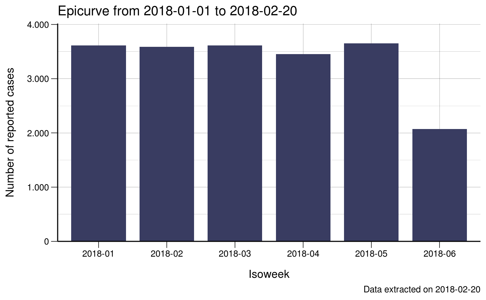
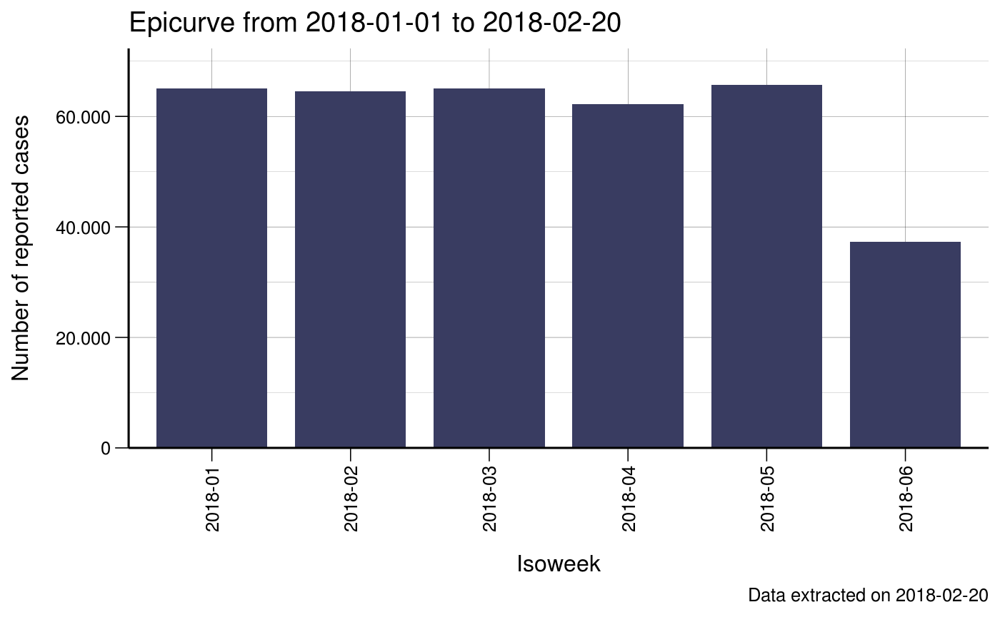

Epicurves
Richard
2019-06-14
epicurves.Rmdlibrary(ggplot2)
#> Registered S3 methods overwritten by 'ggplot2':
#> method from
#> [.quosures rlang
#> c.quosures rlang
#> print.quosures rlang
library(data.table)
library(fhiplot)
#> PACKAGE: fhiplot
#> Version 2019.06.14 at 06:28
#> Developed by Richard White, Norwegian Institute of Public HealthData
We generally start with a linelist dataset.
set.seed(4)
dates <- sample(seq.Date(as.Date("2018-01-01"), as.Date("2018-02-08"), 1), 200, replace = T)
d <- data.frame(
date = dates
)
print(d)
#> date
#> 1 2018-01-11
#> 2 2018-01-03
#> 3 2018-01-07
#> 4 2018-01-30
#> 5 2018-02-07
#> 6 2018-01-02
#> 7 2018-01-24
#> 8 2018-01-01
#> 9 2018-01-20
#> 10 2018-02-04
#> 11 2018-01-27
#> 12 2018-02-06
#> 13 2018-01-02
#> 14 2018-02-01
#> 15 2018-01-05
#> 16 2018-01-15
#> 17 2018-01-22
#> 18 2018-01-05
#> 19 2018-01-11
#> 20 2018-01-16
#> 21 2018-01-14
#> 22 2018-01-21
#> 23 2018-01-01
#> 24 2018-01-24
#> 25 2018-02-01
#> 26 2018-01-13
#> 27 2018-01-20
#> 28 2018-01-12
#> 29 2018-01-29
#> 30 2018-01-05
#> 31 2018-01-14
#> 32 2018-01-08
#> 33 2018-01-10
#> 34 2018-02-03
#> 35 2018-01-30
#> 36 2018-01-22
#> 37 2018-01-11
#> 38 2018-01-26
#> 39 2018-01-22
#> 40 2018-01-13
#> 41 2018-02-05
#> 42 2018-01-02
#> 43 2018-02-04
#> 44 2018-01-23
#> 45 2018-01-21
#> 46 2018-01-05
#> 47 2018-01-08
#> 48 2018-01-10
#> 49 2018-01-01
#> 50 2018-01-08
#> 51 2018-02-02
#> 52 2018-01-15
#> 53 2018-02-02
#> 54 2018-01-12
#> 55 2018-02-01
#> 56 2018-01-14
#> 57 2018-01-04
#> 58 2018-01-18
#> 59 2018-01-12
#> 60 2018-01-05
#> 61 2018-02-02
#> 62 2018-02-08
#> 63 2018-01-01
#> 64 2018-01-27
#> 65 2018-02-03
#> 66 2018-01-13
#> 67 2018-02-04
#> 68 2018-01-05
#> 69 2018-01-28
#> 70 2018-01-04
#> 71 2018-01-24
#> 72 2018-01-08
#> 73 2018-02-05
#> 74 2018-01-09
#> 75 2018-01-19
#> 76 2018-01-23
#> 77 2018-01-03
#> 78 2018-01-09
#> 79 2018-01-26
#> 80 2018-01-22
#> 81 2018-01-09
#> 82 2018-02-04
#> 83 2018-02-05
#> 84 2018-02-06
#> 85 2018-01-07
#> 86 2018-01-12
#> 87 2018-01-09
#> 88 2018-02-03
#> 89 2018-01-25
#> 90 2018-01-31
#> 91 2018-01-10
#> 92 2018-01-11
#> 93 2018-01-26
#> 94 2018-01-13
#> 95 2018-01-19
#> 96 2018-01-08
#> 97 2018-02-08
#> 98 2018-01-07
#> 99 2018-01-26
#> 100 2018-02-03
#> 101 2018-01-14
#> 102 2018-01-13
#> 103 2018-01-24
#> 104 2018-01-21
#> 105 2018-02-04
#> 106 2018-02-08
#> 107 2018-01-04
#> 108 2018-01-10
#> 109 2018-01-23
#> 110 2018-01-05
#> 111 2018-01-31
#> 112 2018-01-26
#> 113 2018-01-22
#> 114 2018-01-11
#> 115 2018-01-30
#> 116 2018-01-12
#> 117 2018-01-17
#> 118 2018-01-30
#> 119 2018-01-01
#> 120 2018-01-22
#> 121 2018-02-03
#> 122 2018-01-11
#> 123 2018-01-17
#> 124 2018-02-03
#> 125 2018-01-02
#> 126 2018-01-13
#> 127 2018-01-26
#> 128 2018-01-19
#> 129 2018-02-03
#> 130 2018-01-27
#> 131 2018-01-31
#> 132 2018-01-01
#> 133 2018-02-02
#> 134 2018-02-03
#> 135 2018-01-29
#> 136 2018-01-24
#> 137 2018-01-30
#> 138 2018-01-08
#> 139 2018-01-16
#> 140 2018-01-25
#> 141 2018-01-14
#> 142 2018-01-04
#> 143 2018-01-01
#> 144 2018-01-11
#> 145 2018-01-31
#> 146 2018-01-02
#> 147 2018-01-10
#> 148 2018-01-24
#> 149 2018-01-01
#> 150 2018-01-11
#> 151 2018-02-08
#> 152 2018-01-25
#> 153 2018-01-29
#> 154 2018-01-18
#> 155 2018-02-05
#> 156 2018-01-05
#> 157 2018-02-06
#> 158 2018-01-13
#> 159 2018-01-12
#> 160 2018-01-11
#> 161 2018-01-02
#> 162 2018-01-22
#> 163 2018-02-01
#> 164 2018-01-01
#> 165 2018-01-20
#> 166 2018-01-21
#> 167 2018-02-05
#> 168 2018-01-06
#> 169 2018-01-28
#> 170 2018-02-05
#> 171 2018-01-18
#> 172 2018-01-04
#> 173 2018-02-02
#> 174 2018-01-30
#> 175 2018-01-31
#> 176 2018-01-27
#> 177 2018-01-15
#> 178 2018-02-02
#> 179 2018-01-08
#> 180 2018-02-08
#> 181 2018-01-20
#> 182 2018-01-16
#> 183 2018-01-17
#> 184 2018-01-18
#> 185 2018-01-19
#> 186 2018-02-02
#> 187 2018-02-08
#> 188 2018-01-14
#> 189 2018-01-11
#> 190 2018-01-27
#> 191 2018-01-01
#> 192 2018-02-07
#> 193 2018-01-22
#> 194 2018-02-07
#> 195 2018-01-01
#> 196 2018-02-05
#> 197 2018-01-15
#> 198 2018-02-02
#> 199 2018-02-08
#> 200 2018-01-14We now:
- Convert this into a
data.table - Aggregate it to daily data (this dataset doesn’t contain any days with 0 cases)
- Create a ‘skeleton’ dataset that contains all days from the first to last day
- Merge the two datasets together (so you now have a dataset that contains days with 0 cases)
- Fill in ‘missing’ N’s with 0 (they are the dates that came from the skeleton dataset)
# Convert to data.table
setDT(d)
# aggregate
d <- d[,
.(
N = .N
),
keyby = .(
date
)
]
# aggregated daily dataset that does not contain days with 0 cases
print(d)
#> date N
#> 1: 2018-01-01 11
#> 2: 2018-01-02 6
#> 3: 2018-01-03 2
#> 4: 2018-01-04 5
#> 5: 2018-01-05 8
#> 6: 2018-01-06 1
#> 7: 2018-01-07 3
#> 8: 2018-01-08 7
#> 9: 2018-01-09 4
#> 10: 2018-01-10 5
#> 11: 2018-01-11 10
#> 12: 2018-01-12 6
#> 13: 2018-01-13 7
#> 14: 2018-01-14 7
#> 15: 2018-01-15 4
#> 16: 2018-01-16 3
#> 17: 2018-01-17 3
#> 18: 2018-01-18 4
#> 19: 2018-01-19 4
#> 20: 2018-01-20 4
#> 21: 2018-01-21 4
#> 22: 2018-01-22 8
#> 23: 2018-01-23 3
#> 24: 2018-01-24 6
#> 25: 2018-01-25 3
#> 26: 2018-01-26 6
#> 27: 2018-01-27 5
#> 28: 2018-01-28 2
#> 29: 2018-01-29 3
#> 30: 2018-01-30 6
#> 31: 2018-01-31 5
#> 32: 2018-02-01 4
#> 33: 2018-02-02 8
#> 34: 2018-02-03 8
#> 35: 2018-02-04 5
#> 36: 2018-02-05 7
#> 37: 2018-02-06 3
#> 38: 2018-02-07 3
#> 39: 2018-02-08 7
#> date N
# create skeleton
skeleton <- data.table(
date = seq.Date(min(d$date), max(d$date), 1)
)
# merge the two datasets together
d <- merge(d, skeleton, all = T)
# Fill in 'missing' Ns with 0
d[is.na(N), N := 0]
# Now you have a clean aggregated daily dataset that contains days with 0 cases!
print(d)
#> date N
#> 1: 2018-01-01 11
#> 2: 2018-01-02 6
#> 3: 2018-01-03 2
#> 4: 2018-01-04 5
#> 5: 2018-01-05 8
#> 6: 2018-01-06 1
#> 7: 2018-01-07 3
#> 8: 2018-01-08 7
#> 9: 2018-01-09 4
#> 10: 2018-01-10 5
#> 11: 2018-01-11 10
#> 12: 2018-01-12 6
#> 13: 2018-01-13 7
#> 14: 2018-01-14 7
#> 15: 2018-01-15 4
#> 16: 2018-01-16 3
#> 17: 2018-01-17 3
#> 18: 2018-01-18 4
#> 19: 2018-01-19 4
#> 20: 2018-01-20 4
#> 21: 2018-01-21 4
#> 22: 2018-01-22 8
#> 23: 2018-01-23 3
#> 24: 2018-01-24 6
#> 25: 2018-01-25 3
#> 26: 2018-01-26 6
#> 27: 2018-01-27 5
#> 28: 2018-01-28 2
#> 29: 2018-01-29 3
#> 30: 2018-01-30 6
#> 31: 2018-01-31 5
#> 32: 2018-02-01 4
#> 33: 2018-02-02 8
#> 34: 2018-02-03 8
#> 35: 2018-02-04 5
#> 36: 2018-02-05 7
#> 37: 2018-02-06 3
#> 38: 2018-02-07 3
#> 39: 2018-02-08 7
#> date NWe can also create a weekly dataset:
# create 3 new variables:
d[, isoyear := lubridate::isoyear(date)]
# we need 'formatC' to ensure that isoweek has padded 0s at the front
# so it is always 2 digits wide
d[, isoweek := formatC(lubridate::isoweek(date), width = 2, flag = 0)]
# paste isoyear and isoweek together
d[, isoyear_isoweek := glue::glue("{isoyear}-{isoweek}", isoyear = isoyear, isoweek = isoweek)]
# aggregate down to weekly level
w <- d[,
.(
N = sum(N)
),
keyby = .(
isoyear_isoweek
)
]
print(w)
#> isoyear_isoweek N
#> 1: 2018-01 36
#> 2: 2018-02 46
#> 3: 2018-03 26
#> 4: 2018-04 33
#> 5: 2018-05 39
#> 6: 2018-06 20Graphs
Daily epicurve
q <- ggplot(d, aes(x = date, y = N))
q <- q + geom_col(fill = fhiplot::vals$cols$primary["B1"], width = 0.8)
q <- q + scale_x_date("Date")
q <- q + scale_y_continuous("Number of reported cases",
breaks = scales::pretty_breaks(5),
expand = c(0, 0)
)
q <- q + labs(title = "Epicurve from 2018-01-01 to 2018-02-20")
q <- q + labs(caption = "Data extracted on 2018-02-20")
q <- q + fhiplot::theme_fhi_lines()
q
Weekly epicurve
q <- ggplot(w, aes(x = isoyear_isoweek, y = N))
q <- q + geom_col(fill = fhiplot::vals$cols$primary["B1"], width = 0.8)
q <- q + scale_x_discrete("Isoweek")
q <- q + scale_y_continuous("Number of reported cases",
breaks = scales::pretty_breaks(5),
expand = c(0, 0)
)
q <- q + labs(title = "Epicurve from 2018-01-01 to 2018-02-20")
q <- q + labs(caption = "Data extracted on 2018-02-20")
q <- q + fhiplot::theme_fhi_lines()
q
Weekly epicurve with vertical x-axis labels
q <- ggplot(w, aes(x = isoyear_isoweek, y = N))
q <- q + geom_col(fill = fhiplot::vals$cols$primary["B1"], width = 0.8)
q <- q + scale_x_discrete("Isoweek")
q <- q + scale_y_continuous("Number of reported cases",
breaks = scales::pretty_breaks(5),
expand = c(0, 0)
)
q <- q + labs(title = "Epicurve from 2018-01-01 to 2018-02-20")
q <- q + labs(caption = "Data extracted on 2018-02-20")
q <- q + fhiplot::theme_fhi_lines()
q <- q + theme(axis.text.x = element_text(angle = 90, hjust = 1, vjust = 0.5))
q